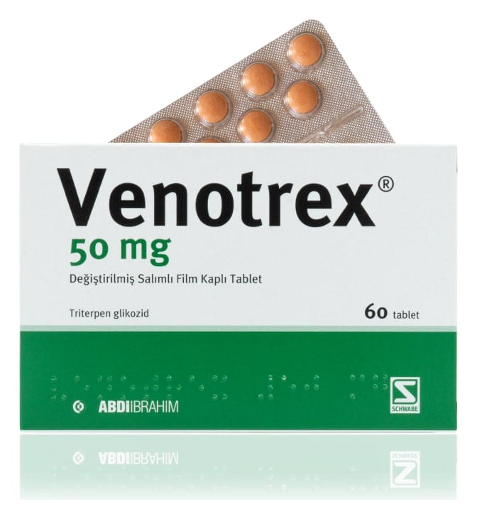

Venotrex 50 mg Değiştirilmiş Salımlı Film Kaplı Tablet, 60 Adet

Ne için kullanılır
KT · Bölüm 1VENOTREX, 60 tabletlik ambalajlarda kullanıma sunulmuştur. Her bir tablet, triterpen glikozide eşdeğer 50 mg essin ihtiva eder. VENOTREX tabletleri kişinin varislerinden doğan şikayetlerinde, örneğin bacaklarda ağırlık, yorgunluk, şişkinlik hissinde, ayrıca hemoroid tedavilerinde kullanılır.